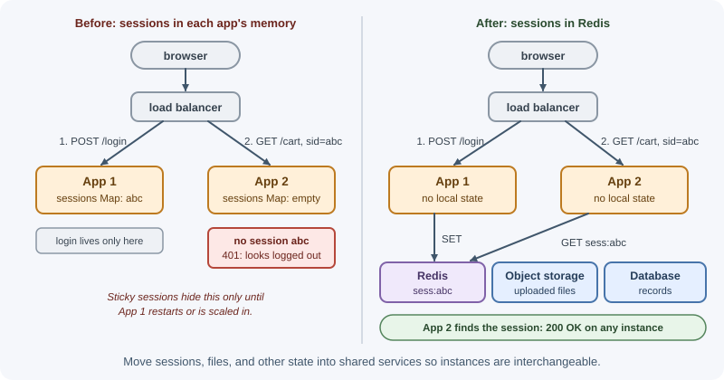
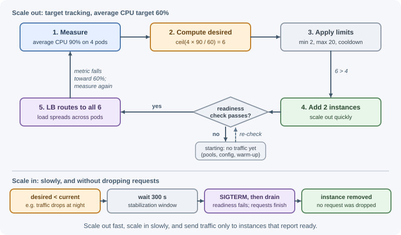

Stateless Services and Autoscaling¶
A stateless service keeps no client-specific data in its own memory or disk between requests, so any instance can handle any request. That property is what makes horizontal scaling and autoscaling, adding and removing instances automatically as load changes, safe and simple. This lesson explains how to make services stateless and how autoscaling decides when to act.
Why it matters¶
Traffic is rarely flat: it rises during the day, spikes during sales, and drops at night. Running enough servers for the peak all the time wastes money; running too few causes slow responses and errors at peak. Autoscaling solves this, but only if instances are interchangeable, start quickly, and can be removed without dropping requests. Hidden state in one instance (a session in memory, a file on local disk) breaks all of that.
Real-world usage¶
- Netflix: predictive plus reactive autoscaling. Netflix built Scryer to forecast traffic and add capacity before it is needed, because reactive scaling alone fell short: instance start-up took 10 to 45 minutes, and outages were sometimes followed by retry storms that hit a fleet the autoscaler had just shrunk. Scryer runs "in tandem" with the reactive Amazon Auto Scaling, which still catches surprises. (Netflix Tech Blog, 2013)
- Kubernetes: the HPA algorithm in the open. The Horizontal Pod
Autoscaler documents its exact rule
(
ceil(currentReplicas × currentMetric / desiredMetric)), a 10% tolerance, a 300-second scale-down stabilization window and immediate scale-up by default; the HPA section below uses them. (Kubernetes docs) - AWS Application Load Balancer: stickiness, slow start, draining.
ALB can pin clients with a load-balancer cookie (
AWSALB) or your application's cookie; can ramp traffic to new targets gradually (slow start); and stops sending new requests to a deregistering target while waiting up to 300 seconds (the default) for in-flight requests to finish. (AWS docs) - Microsoft Azure Architecture Center: "Avoid instance stickiness". Its scale-out design principle warns that stickiness "limits the application's ability to scale out", for example because a high-volume user's traffic is not spread across instances. (Microsoft Learn)
- The Twelve-Factor App: stateless processes. "Twelve-factor processes are stateless and share-nothing", and "sticky sessions are a violation of twelve-factor and should never be used or relied upon". (12factor.net)
Popular tools and providers¶
| Need | Common choices |
|---|---|
| Autoscaling containers | Kubernetes HPA; KEDA for event-driven scaling (queue length, Kafka lag, Redis lists) and scale-to-zero |
| Autoscaling VMs | Amazon EC2 Auto Scaling, Google Cloud managed instance groups, Azure Virtual Machine Scale Sets |
| Autoscaling managed containers | Amazon ECS service auto scaling, Google Cloud Run, Azure Container Apps |
| Shared session storage | Redis or Valkey (connect-redis), a database-backed store, or signed tokens |
| Load balancing | AWS ALB, Google Cloud Load Balancing, Azure Load Balancer / Application Gateway, NGINX, HAProxy, Envoy |
How it works¶
Stateless and stateful services¶
| Stateless service | Stateful service | |
|---|---|---|
| Keeps per-client data between requests | No | Yes |
| Any instance can serve any request | Yes | No: the client must reach "its" instance |
| Losing an instance | Requests retry elsewhere; nothing lost | Data or sessions on it are lost or must fail over |
| Scaling | Add or remove instances freely | Needs partitioning, replication, or rebalancing |
| Examples | REST API servers, rendering services | Databases, caches, WebSocket gateways, game servers |
Stateless does not mean the system has no state; it means state lives in dedicated services built to manage it (databases, caches, object storage), not in the application instances.
Moving state out of the application¶
| State | Where it often starts (problem) | Where it should live |
|---|---|---|
| User sessions | Process memory (express-session default MemoryStore) |
Redis or a database session store, or signed tokens |
| Uploaded files | Local disk | Object storage (S3 or similar); see file storage and uploads |
| Cached data | Per-process Map |
Redis (or keep a small local cache that is safe to lose) |
| Background jobs | setTimeout or in-memory arrays |
A job queue; see background jobs and scheduling |
| Scheduled tasks | Cron inside every instance (runs N times) | One scheduler, or a lock so only one instance runs each job |
| WebSocket subscriptions | Connections in one instance | Pub/sub (Redis, a broker) to fan messages out to all instances |
| Rate-limit counters | In-memory counters per instance | Redis, so limits apply across instances |
| Configuration | Files edited on a server | Environment variables or a config service |

Sticky sessions and their trade-offs¶
A load balancer can use sticky sessions (session affinity), routing each client to the same instance, usually with a cookie. This lets a stateful app run on several instances without moving its state.
| Benefit | Cost |
|---|---|
| Works with in-memory sessions or caches | Uneven load: heavy users pile onto some instances |
| Can improve local cache hit rates | When an instance dies or is scaled in, its users lose their state |
| Required by some protocols during a connection | New instances receive traffic only from new clients, so scaling out helps slowly |
| Deployments and rebalancing become harder |
Treat stickiness as an optimization or a temporary workaround, not a correctness requirement. Long-lived connections (WebSockets) are naturally pinned to one instance for their lifetime, which is fine as long as reconnecting to another instance works.
Horizontal scaling behind a load balancer¶
┌─> instance 1 ─┐
clients ─> load ────┼─> instance 2 ─┼─> shared data services
balancer └─> instance 3 ─┘
│ health checks every few seconds; unhealthy instances get no traffic
The load balancer spreads requests, checks health, and stops sending traffic to failed instances. Algorithms and setup are covered in load balancing.
Autoscaling signals¶
An autoscaler watches a metric and adjusts the instance count.
| Signal | Good for | Caveats |
|---|---|---|
| CPU utilization | CPU-bound services | Misleading for I/O-bound Node.js services that wait on databases |
| Request rate per instance | Web and API tiers | Needs a known per-instance capacity |
| Latency (p95/p99) | User-facing goals | Reacts late; latency can rise from downstream causes that more instances will not fix |
| Queue depth / backlog per worker | Background workers | Best signal for consumers: scale by "messages waiting per worker" |
| Concurrent connections | WebSocket gateways | Connections are long-lived; scaling in disconnects users |
| Memory | Rarely a good scaling signal | Usually indicates leaks or sizing, not load |
| Schedule | Predictable daily or weekly peaks | Combine with a reactive policy for surprises |
Scaling policies¶
- Target tracking: keep a metric near a target, such as "average CPU at 60%" or "1,000 requests per instance". The autoscaler computes how many instances are needed. This is the usual default.
- Step scaling: add or remove a set number of instances when a metric crosses thresholds ("+2 if CPU > 70%, +4 if > 85%").
- Scheduled scaling: set capacity for known times ("20 instances at 08:45 on weekdays").
- Predictive scaling: some cloud providers forecast load from history and scale ahead of it.
Always set a minimum (enough for availability, usually at least two instances in different zones) and a maximum (to cap cost and protect downstream systems such as the database).
One full turn of the loop, using target tracking:

Cooldowns and stabilization¶
New instances take time to start and to affect metrics. Without a pause, an autoscaler can overreact, adding far too many instances or flapping up and down.
- Cooldown / warm-up period: after a scaling action, wait before acting again or before counting new instances' metrics.
- Stabilization window: use the highest recommendation over recent minutes before scaling in, so a brief dip does not remove capacity.
- Scale out quickly and in slowly: under-capacity hurts users; over-capacity only costs money for a few minutes.
Scale-in protection¶
Removing an instance can interrupt work. Protect instances that are running long jobs, holding many connections, or acting as a leader. Cloud autoscaling groups offer instance-level scale-in protection, and Kubernetes lets you control scale-down behavior and disruption budgets. Workers should finish or hand back their current job when asked to stop.
Kubernetes Horizontal Pod Autoscaler¶
In Kubernetes, the Horizontal Pod Autoscaler (HPA) adjusts the number of pod replicas of a Deployment from metrics. Its basic rule is:
desiredReplicas = ceil(currentReplicas × currentMetricValue / targetMetricValue)
Example: 4 pods at 90% average CPU, target 60%
ceil(4 × 90 / 60) = ceil(6) = 6 pods
apiVersion: autoscaling/v2
kind: HorizontalPodAutoscaler
metadata:
name: api
spec:
scaleTargetRef:
apiVersion: apps/v1
kind: Deployment
name: api
minReplicas: 2
maxReplicas: 20
metrics:
- type: Resource
resource:
name: cpu
target:
type: Utilization
averageUtilization: 60 # percent of each pod's CPU request
behavior:
scaleDown:
stabilizationWindowSeconds: 300 # the default, shown explicitly
Details that decide how the HPA behaves:
- Tolerance. If
currentMetric / desiredMetricis within 0.1 of 1.0 (10%, the default), the HPA does nothing. 63% CPU against a 60% target is a ratio of 1.05, so no pods are added. - Default behaviour. Scale-down waits a 300-second stabilization window and uses the highest recommendation in that window. Scale-up has no window: it acts at once, adding at most 4 pods or 100% of the current replicas (whichever is more) every 15 seconds.
- Resource requests. CPU utilization is measured against each container's CPU request. If a pod's containers have no request set, utilization is undefined and the HPA takes no action for that metric.
- Metrics sources. CPU and memory come from the
metrics.k8s.ioAPI, usually provided by Metrics Server, which is installed separately. Custom and external metrics (requests per second, queue length) need an adapter forcustom.metrics.k8s.ioorexternal.metrics.k8s.io.
Graceful shutdown¶
When an instance is removed, it should finish in-flight work instead of dropping it:
1. Orchestrator sends SIGTERM. At the same time it starts removing the
instance from load balancing, which takes a moment to reach every proxy
2. Instance fails its readiness check but keeps serving for a short drain
delay (a few seconds), so late-routed requests are not refused
3. Instance stops accepting new connections and closes idle keep-alive ones
4. In-flight requests finish (with a time limit)
5. Close database pools, flush logs, release locks
6. Exit; the orchestrator force-kills after its grace period
(Kubernetes default: 30 seconds)
Readiness, liveness, and warm-up¶
- Readiness check: "Can this instance take traffic now?" It fails while starting up (connecting to the database, loading config) and while shutting down. Load balancers and Kubernetes route only to ready instances.
- Liveness check: "Is this instance stuck and in need of a restart?" Keep it simple; it should not depend on the database, or a database outage will restart every instance.
- Warm-up: new instances may be slow at first (cold connection pools, empty local caches, just-in-time compilation). Some load balancers can ramp traffic to new targets gradually ("slow start").
When to use and when not to use¶
- Make web and API tiers stateless almost always. It is what lets you deploy, scale, and replace instances without logging users out.
- Keep state where it belongs: databases, caches, queues, and object storage are the stateful parts. Scale them with replication and partitioning, not with a CPU-based autoscaler.
- Autoscale when load varies (daily cycles, campaigns, batch backlogs) and new instances start in seconds to a few minutes.
- Prefer scheduled or predictive capacity when start-up is slow or peaks are predictable, and keep a reactive policy for surprises.
- Do not autoscale a service whose real limit is downstream (a saturated database, a rate-limited third-party API): more instances just add pressure there.
- Fixed capacity is fine for small, steady internal services, where two instances for availability are all you need.
| Approach | Use when | Avoid when | Scaling impact |
|---|---|---|---|
| Sticky sessions | A legacy app keeps sessions in memory and cannot change yet; a protocol needs several requests to reach one instance | You need even load, fast scale-in, or painless deploys | New instances only get new clients; losing an instance loses its users' sessions |
| Shared session store (Redis, database) | Server-side sessions (revocable logins, carts) across many instances | Adding one more stateful dependency is not justified for a tiny app | Any instance serves any request; the store must be highly available |
| Signed tokens (JWT, signed cookies) | Short-lived, read-mostly identity data; many services verify the user | You need instant revocation or large session data | No shared lookup per request; revocation needs short expiry or a deny-list |
Practical examples¶
Moving Express sessions into Redis¶
import express from "express";
import session from "express-session";
import { RedisStore } from "connect-redis";
import { createClient } from "redis";
const redisClient = createClient({ url: process.env.REDIS_URL });
redisClient.on("error", (err) => console.error("Redis client error", err)); // without a listener, an error crashes the process
await redisClient.connect();
const app = express();
app.set("trust proxy", 1); // behind a load balancer that terminates HTTPS
app.use(session({
store: new RedisStore({ client: redisClient, prefix: "sess:" }),
secret: process.env.SESSION_SECRET,
resave: false,
saveUninitialized: false,
cookie: { httpOnly: true, secure: true, sameSite: "lax", maxAge: 8 * 60 * 60 * 1000 },
}));
Any instance can now read any user's session, so sticky sessions are no
longer needed. The import style above matches recent connect-redis
versions; older versions export the store differently, so check the
package documentation for the version you install.
Health endpoints and graceful shutdown in Node.js¶
import express from "express";
const app = express();
let shuttingDown = false;
app.get("/health/live", (req, res) => res.sendStatus(200)); // process is running
app.get("/health/ready", (req, res) => {
res.sendStatus(shuttingDown ? 503 : 200); // stop new traffic during shutdown
});
const server = app.listen(process.env.PORT ?? 3000);
const DRAIN_DELAY_MS = 5_000; // time for load balancers to stop routing here
process.on("SIGTERM", () => {
shuttingDown = true; // readiness now returns 503
setTimeout(() => { // keep serving while routing updates spread
server.close(async () => { // stop accepting; wait for in-flight requests
await db.close(); // release connections
process.exit(0);
});
server.closeIdleConnections(); // drop idle keep-alive sockets so close() can finish
}, DRAIN_DELAY_MS);
setTimeout(() => process.exit(1), 25_000).unref(); // hard stop before the grace period ends
});
Here db stands for your database client or pool. The order matters:
- Readiness flips to 503 at once, but the server keeps accepting
requests for
DRAIN_DELAY_MS. Load balancers take a moment to notice, and closing the port immediately would refuse the requests they still send. server.close()then stops new connections and waits for in-flight requests. Since Node.js 19 it also closes idle keep-alive connections itself; the explicitcloseIdleConnections()(added in 18.2) covers Node 18.- The 25-second timer is a safety net inside Kubernetes' default 30-second grace period, after which the process is killed anyway.
In Kubernetes you can put the drain delay in a preStop hook instead; it
runs before the container gets SIGTERM and counts against the same grace
period. See running Express in production
for keep-alive connections and timeouts during shutdown.
Scaling workers by queue backlog¶
Target: 100 waiting messages per worker
Backlog: 2,400 messages -> 2,400 / 100 = 24 workers (capped at max 30)
Backlog: 150 messages -> 2 workers (min)
Backlog per worker reacts to the actual amount of pending work, unlike CPU, which may stay low while workers wait on slow downstream APIs.
Best practices¶
- Keep application instances stateless; move sessions, files, and jobs to shared services.
- Avoid relying on sticky sessions for correctness.
- Choose a scaling metric that reflects real load for that service (queue backlog for workers, requests or CPU for APIs).
- Set minimums for availability and maximums to protect cost and downstream systems.
- Scale out quickly and in slowly, with cooldowns or stabilization windows.
- Implement readiness checks, liveness checks, and graceful shutdown.
- Load-test scaling behavior: how long does it take for new capacity to help?
In production¶
Users are logged out after a deploy or a scale-in
- Symptom: bursts of 401 responses or "please sign in again" right after instances are replaced or removed.
- Detect: overlay 401 counts on deploy and scaling events; log when a request carries a session cookie that the server cannot find.
- Cause: sessions live in process memory (the
express-sessiondefault MemoryStore), or sticky sessions pin users to instances that were just removed. - Fix: move sessions to a shared store (Redis) or signed tokens, then drop the dependency on stickiness.
502 or connection-refused errors during every rollout
- Symptom: a short spike of 502/503 at the load balancer each time pods or instances are stopped.
- Detect: load-balancer 5xx metrics (for ALB,
HTTPCode_ELB_5XX_CountandHTTPCode_Target_5XX_Count) lining up with termination events. - Cause: the app closes its port on SIGTERM before the load balancer has stopped routing to it; or the app closes idle keep-alive connections sooner than the load balancer does, so it reuses a socket the app just closed.
- Fix: fail readiness, wait a drain delay, then close (the
example above).
Set the app's keep-alive timeout above the load balancer's idle timeout,
as AWS recommends (ALB default: 60 seconds; Node's
server.keepAliveTimeoutis documented as 5 seconds by default).
Replica count flaps up and down
- Symptom: instances are added and removed every few minutes; cold caches and connection churn make latency worse.
- Detect: a sawtooth in the replica graph; frequent scaling events in
kubectl describe hpaor the cloud's activity history. - Cause: a noisy metric, a target set too tightly, or a scale-down window shortened far below the default.
- Fix: keep or lengthen the scale-down stabilization window, add scale-down policies (for example "at most 10% per minute"), and pick a steadier metric.
Latency climbs but the autoscaler does nothing
- Symptom: p95 latency and queue time rise while the replica count stays flat.
- Detect:
kubectl get hpashows CPU far below target, orkubectl describe hpareports that it cannot compute the metric. - Cause: an I/O-bound Node.js service waits on the database, so CPU stays low; or containers have no CPU request, so utilization cannot be computed.
- Fix: set resource requests; scale on requests per pod, concurrency, or backlog through a metrics adapter or KEDA; check whether the real bottleneck is downstream.
Scale-out takes the database down
- Symptom: during a spike, new instances fail to start or requests fail
with "too many connections" (PostgreSQL error
53300,too_many_connections). - Detect: database connection count at its limit while the replica count rises.
- Cause: every instance opens its own pool. 20 replicas × a pool of 20
is 400 connections, against PostgreSQL's typical default
max_connectionsof 100. - Fix: cap
maxReplicasfrom the database budget, shrink pools, or put a connection pooler (PgBouncer, RDS Proxy) in front; see database scaling.
Important terminology¶
- Stateless service: A service that keeps no per-client data between requests in its instances.
- Sticky session (session affinity): Routing a client's requests to the same instance.
- Autoscaling: Automatically changing the number of instances based on metrics or schedules.
- Target tracking: A policy that keeps a metric near a target value.
- Cooldown / stabilization window: A delay that prevents rapid, repeated scaling actions.
- Scale-in protection: Preventing specific instances from being removed.
- Readiness / liveness probe: Checks for "can receive traffic" and "needs restarting".
- Graceful shutdown: Finishing in-flight work before an instance exits.
Common mistakes and misconceptions¶
- Using in-memory sessions and wondering why users are logged out after scaling or deploys.
- Running cron jobs inside every instance, so they execute many times.
- Scaling an I/O-bound Node.js API on CPU, which stays low while latency climbs.
- Setting no maximum, so a traffic spike scales the app until the database collapses.
- Liveness checks that query the database, causing mass restarts during a database outage.
- Exiting immediately on
SIGTERMand dropping in-flight requests. - Assuming autoscaling reacts instantly; new instances take minutes to start and warm up.
Revision questions¶
- What does "stateless" mean for a service, and where does the state go?
- What are the drawbacks of sticky sessions?
- Which autoscaling signal would you use for a queue worker, and why?
- Calculate the HPA's desired replicas for 5 pods at 80% CPU with a 50% target.
- Why should scale-in be slower than scale-out?
- What is the difference between readiness and liveness checks?
- Why does the shutdown example wait a few seconds before calling
server.close(), and what happens if it closes immediately? - The HPA target is 60% CPU and pods average 64%. Does it scale? Why?
Further learning¶
- Kubernetes: Horizontal Pod Autoscaling
- Kubernetes: Pod termination
- AWS: Application Load Balancer target group attributes
- Netflix: Scryer, predictive auto scaling
- Kubernetes: Liveness, readiness, and startup probes
- Amazon EC2 Auto Scaling: Target tracking scaling policies
- The Twelve-Factor App: Processes
- Related: scalability fundamentals, load balancing, Docker.